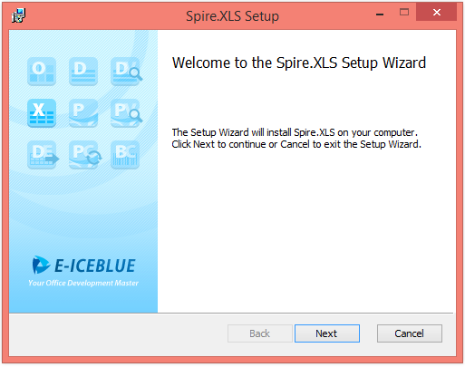
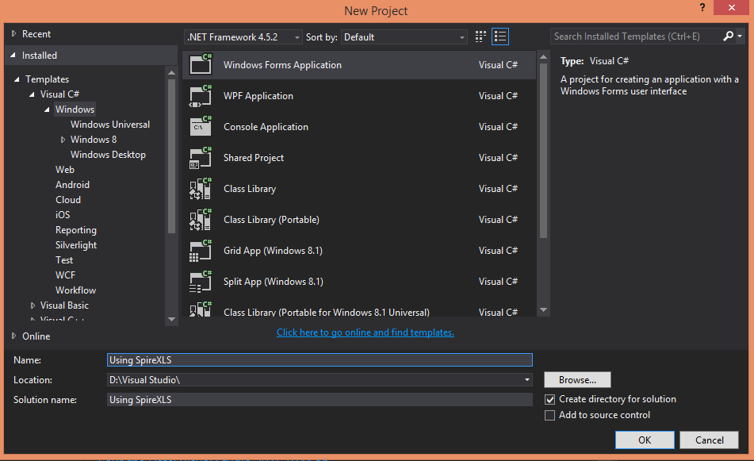
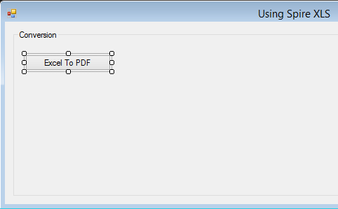
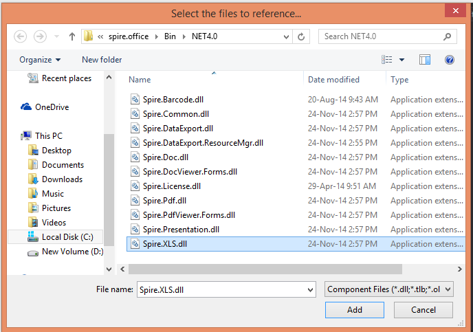
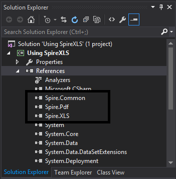
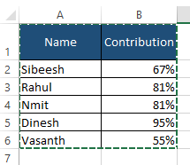
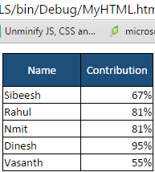
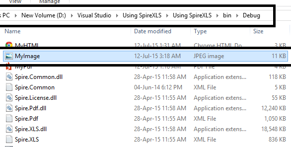
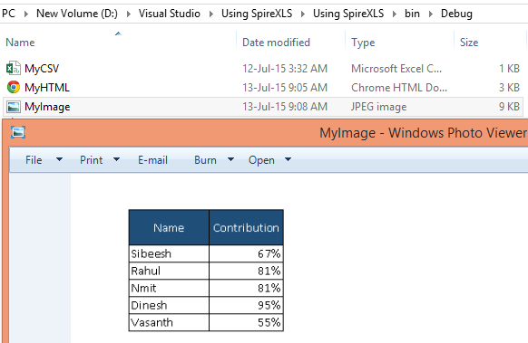
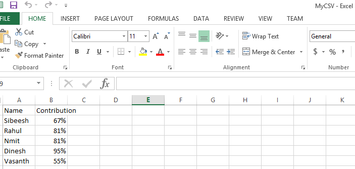

Hi I hope you all are fine. Today we are going to see a new product Spire.XLS which helps us to create, manipulate, convert EXCEL file to other formats and many more. This product has been introduced by the company E-Iceblue. I hope you have read my article of Spire.Doc. If you have not read it, I recommend you to read it here: Using Spire.Doc
Background
Always, managing excel files through code is a tough job for me. If you are also thinking the same, I strongly recommend this product Spire.XLX from E-Iceblue. It made the task easier than ever. In this article I will show you the demo for converting the Excel files to other formats. I hope you will like it.
Download the files
You can always the needed files from here: Download Spire.XLS
Install Spire.XLS
I am using evaluation version with one month temporary license. There are free versions also available for spire.xls with some limitation. You can try that. Now click on the exe file after you extract the downloaded file. The installation will get started then.

So Shall we start?
Once you Installed, you are ready to go. We will start with a “Simple Windows Form ” Application. Before getting started, Please install Spire.XLs and Visual studio 2008 or above. I am using Visual Studio 2015 RC.
Open your Visual Studio, click on New->Project->Select Visual C# (if you are good in C# or select Visual Basic) Project->Windows->Windows forms application->Name your project(I am naming it as Using SpireXLs)

Now create a group box and a button in your form and name them :). Later, click on the button.

Now right click on your project and click add reference, in the browse tab find out the folder in which you have installed spire xls. Usually it will be in the C:\Program Files\e-iceblue\Spire.Xls. Now just find your framework version from BIN folder and add Spire.xls.dll


Now we have added reference too. So shall we start coding ?
Using the code
To start with coding you need to add the needed namespaces as follows.
using Spire.Xls; using Spire.Pdf; using Spire.Xls.Converter;
using Spire.Xls; using Spire.Pdf; using Spire.Xls.Converter;
In the button click event you need to add the following lines codes.
C# Code
private void button1_Click(object sender, EventArgs e)
{
// load Excel file
Workbook workbook = new Workbook();
workbook.LoadFromFile("D:\\MyExcel.xlsx");
// Set PDF template
PdfDocument pdfDocument = new PdfDocument();
pdfDocument.PageSettings.Orientation = PdfPageOrientation.Landscape;
pdfDocument.PageSettings.Width = 970;
pdfDocument.PageSettings.Height = 850;
//Convert Excel to PDF using the template above
PdfConverter pdfConverter = new PdfConverter(workbook);
PdfConverterSettings settings = new PdfConverterSettings();
settings.TemplateDocument = pdfDocument;
pdfDocument = pdfConverter.Convert(settings);
// Save and preview PDF
pdfDocument.SaveToFile("MyPDF.pdf");
System.Diagnostics.Process.Start("MyPDF.pdf");
}
private void button1_Click(object sender, EventArgs e) { // load Excel file Workbook workbook = new Workbook(); workbook.LoadFromFile("D:\\MyExcel.xlsx"); // Set PDF template PdfDocument pdfDocument = new PdfDocument(); pdfDocument.PageSettings.Orientation = PdfPageOrientation.Landscape; pdfDocument.PageSettings.Width = 970; pdfDocument.PageSettings.Height = 850; //Convert Excel to PDF using the template above PdfConverter pdfConverter = new PdfConverter(workbook); PdfConverterSettings settings = new PdfConverterSettings(); settings.TemplateDocument = pdfDocument; pdfDocument = pdfConverter.Convert(settings); // Save and preview PDF pdfDocument.SaveToFile("MyPDF.pdf"); System.Diagnostics.Process.Start("MyPDF.pdf"); }
VB.NET Code
'load Excel file
Dim workbook As New Workbook()
workbook.LoadFromFile("D:\MyExcel.xlsx")
' Set PDF template
Dim pdfDocument As New PdfDocument()
pdfDocument.PageSettings.Orientation = PdfPageOrientation.Landscape
pdfDocument.PageSettings.Width = 970
pdfDocument.PageSettings.Height = 850
'Convert Excel to PDF using the template above
Dim pdfConverter As New PdfConverter(workbook)
Dim settings As New PdfConverterSettings()
settings.TemplateDocument = pdfDocument
pdfDocument = pdfConverter.Convert(settings)
' Save and preview PDF
pdfDocument.SaveToFile("MyPdf.pdf")
System.Diagnostics.Process.Start("MyPdf.pdf")
'load Excel file Dim workbook As New Workbook() workbook.LoadFromFile("D:\MyExcel.xlsx") ' Set PDF template Dim pdfDocument As New PdfDocument() pdfDocument.PageSettings.Orientation = PdfPageOrientation.Landscape pdfDocument.PageSettings.Width = 970 pdfDocument.PageSettings.Height = 850 'Convert Excel to PDF using the template above Dim pdfConverter As New PdfConverter(workbook) Dim settings As New PdfConverterSettings() settings.TemplateDocument = pdfDocument pdfDocument = pdfConverter.Convert(settings) ' Save and preview PDF pdfDocument.SaveToFile("MyPdf.pdf") System.Diagnostics.Process.Start("MyPdf.pdf")
In the above lines code, we are loading an excel file MyExcel.xlsx from my drive. The following is the content of our excel file.

Now if you run your project and click our button, you will get a pdf file as follows.
Cool!. Very simple right? Now we will go to other conversions as well.
Excel to HTML
To convert our excel file to HTML, you need to create a button in our form and paste the following codes to the button click event.
C# Code
private void button2_Click(object sender, EventArgs e)
{
//load Excel file
Workbook workbook = new Workbook();
workbook.LoadFromFile("D:\\MyExcel.xlsx");
//convert Excel to HTML
Worksheet sheet = workbook.Worksheets[0];
sheet.SaveToHtml("MyHTML.html");
//Preview HTML
System.Diagnostics.Process.Start("MyHTML.html");
}
private void button2_Click(object sender, EventArgs e) { //load Excel file Workbook workbook = new Workbook(); workbook.LoadFromFile("D:\\MyExcel.xlsx"); //convert Excel to HTML Worksheet sheet = workbook.Worksheets[0]; sheet.SaveToHtml("MyHTML.html"); //Preview HTML System.Diagnostics.Process.Start("MyHTML.html"); }
VB.NET Code
Private Shared Sub Main(args As String())
'load Excel file
Dim workbook As New Workbook()
workbook.LoadFromFile("D:\\MyExcel.xlsx")
'convert Excel to HTML
Dim sheet As Worksheet = workbook.Worksheets(0)
sheet.SaveToHtml("MyHTML.html")
'Preview HTML
System.Diagnostics.Process.Start("MyHTML.html")
End Sub
Private Shared Sub Main(args As String()) 'load Excel file Dim workbook As New Workbook() workbook.LoadFromFile("D:\\MyExcel.xlsx") 'convert Excel to HTML Dim sheet As Worksheet = workbook.Worksheets(0) sheet.SaveToHtml("MyHTML.html") 'Preview HTML System.Diagnostics.Process.Start("MyHTML.html") End Sub
Now if you run the code, you can see an html file as follows.

Excel To Image
To convert our excel file to image, you need to create a button in our form and paste the following codes to the button click event.
C# Code
private void button3_Click(object sender, EventArgs e)
{
Workbook workbook = new Workbook();
workbook.LoadFromFile("D:\\MyExcel.xlsx");
Worksheet sheet = workbook.Worksheets[0];
sheet.SaveToImage("MyImage.jpg");
}
private void button3_Click(object sender, EventArgs e) { Workbook workbook = new Workbook(); workbook.LoadFromFile("D:\\MyExcel.xlsx"); Worksheet sheet = workbook.Worksheets[0]; sheet.SaveToImage("MyImage.jpg"); }
VB.NET Code
Shared Sub Main(ByVal args() As String)
Dim workbook As New Workbook()
workbook.LoadFromFile("D:\\MyExcel.xlsx")
Dim sheet As Worksheet = workbook.Worksheets(0)
sheet.SaveToImage("MyImage.jpg")
End Sub
Shared Sub Main(ByVal args() As String) Dim workbook As New Workbook() workbook.LoadFromFile("D:\\MyExcel.xlsx") Dim sheet As Worksheet = workbook.Worksheets(0) sheet.SaveToImage("MyImage.jpg") End Sub
Now if you run the code, you can see an Image as follows.


Excel to CSV
To convert our excel file to image, you need to create a button in our form and paste the following codes to the button click event.
C# Code
private void button3_Click(object sender, EventArgs e)
{
Workbook workbook = new Workbook();
workbook.LoadFromFile("D:\\MyExcel.xlsx");
Worksheet sheet = workbook.Worksheets[0];
sheet.SaveToFile("MyCSV.csv", ",", Encoding.UTF8);
}
private void button3_Click(object sender, EventArgs e) { Workbook workbook = new Workbook(); workbook.LoadFromFile("D:\\MyExcel.xlsx"); Worksheet sheet = workbook.Worksheets[0]; sheet.SaveToFile("MyCSV.csv", ",", Encoding.UTF8); }
VB.NET Code
Shared Sub Main(ByVal args() As String)
Dim workbook As New Workbook()
workbook.LoadFromFile("D:\\MyExcel.xlsx")
Dim sheet As Worksheet = workbook.Worksheets(0)
sheet.SaveToFile("MyCSV.csv", ",", Encoding.UTF8)
End Sub
Shared Sub Main(ByVal args() As String) Dim workbook As New Workbook() workbook.LoadFromFile("D:\\MyExcel.xlsx") Dim sheet As Worksheet = workbook.Worksheets(0) sheet.SaveToFile("MyCSV.csv", ",", Encoding.UTF8) End Sub
Now if you run the code, you can see a CSV file as follows.

Please be noted that, you can convert your excel to any other file format, there are plenty of options available. Please try that too. I have given only three options which I use always.